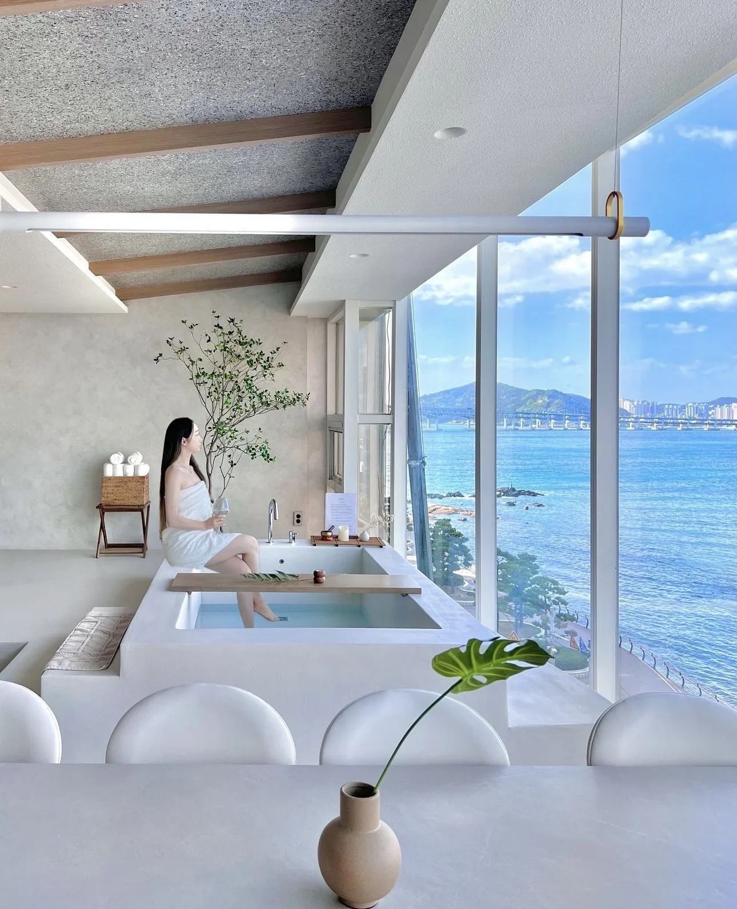
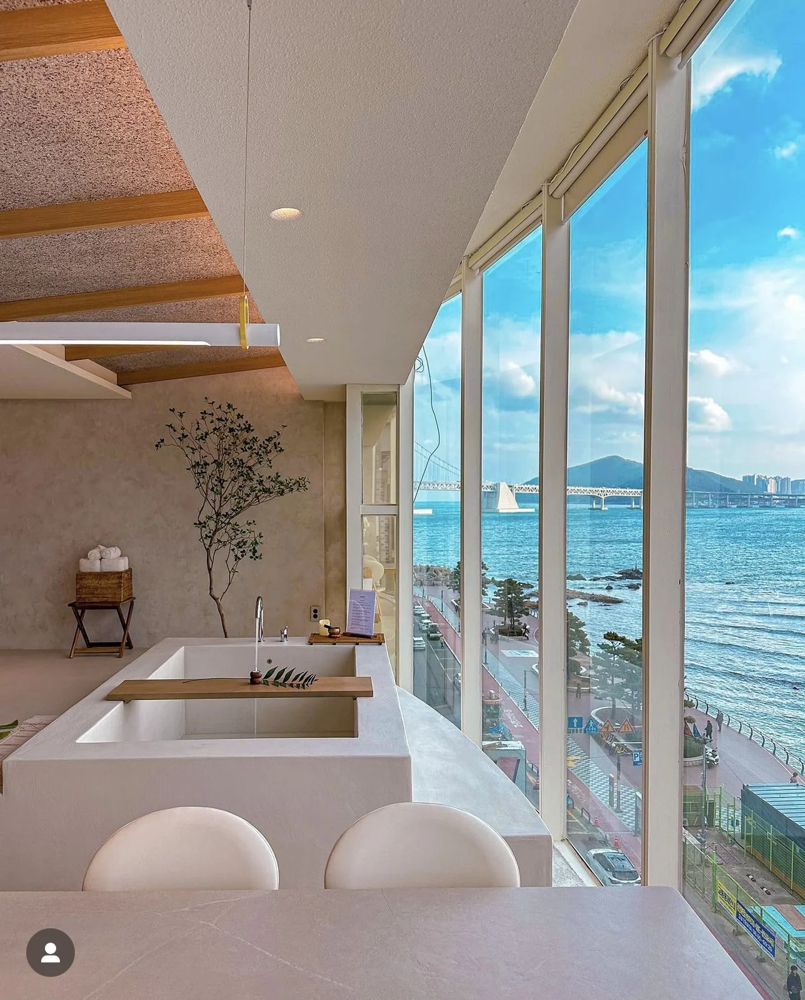
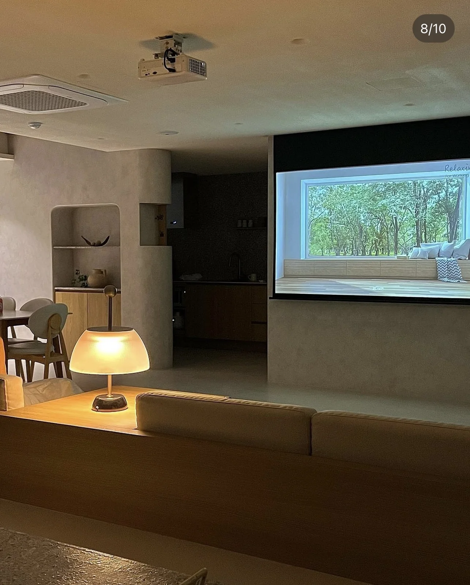
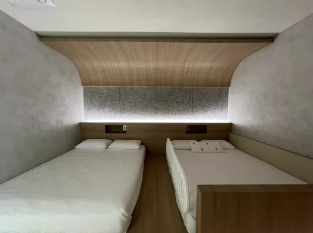

오롯 OROT,
6층에서 내려다보는 바다
건물 가장 높은 층, 6층. 해변과 바다가 한눈에 들어오고, 해 질 무렵의 자쿠지가 오롯의 자랑입니다.
한 층 더 높은 자리, 노을이 길게 남는 객실
오롯은 6층에 있습니다. 같은 광안리 바다를 한 층 더 높은 자리에서 내려다보기 때문에, 해변 전체의 곡선과 광안대교, 그 너머 수평선까지 시야가 넓게 열립니다. 해 질 무렵 자쿠지에 물을 받으면 노을이 방 안까지 들어옵니다.
거실과 자쿠지가 벽 없이 이어지는 구조라, 물놀이와 휴식이 한 공간에서 이루어집니다. 다이닝 테이블도 창가를 향해 있어 식사하는 동안 바다를 놓치지 않습니다.
입실은 16시, 퇴실은 12시입니다. 마지막 날 아침을 서두르지 않고 바다를 한 번 더 보고 나올 수 있는 시간입니다.
에어비앤비 예약 페이지가 새 창으로 열립니다.

오롯에서 놓치지 말 것
노을 지는 6층 자쿠지
해 질 무렵 자쿠지에 물을 받으면 광안리 노을이 통창을 가득 채웁니다.
거실과 이어진 자쿠지
벽으로 나뉘지 않은 구조. 아이가 놀다가 바로 물로, 다시 거실로 이어집니다.
창가 다이닝
식탁에 앉아서도 바다가 보입니다. 아침 커피와 밤 술이 모두 바다를 향합니다.
12시 늦은 퇴실
마지막 날 아침을 여유 있게. 해변 산책 후 돌아와 짐을 챙겨도 됩니다.
오롯 객실 사진
노을 진 자쿠지에서 시작해, 거실과 다이닝, 침실까지 순서대로 담았습니다.








6층 도면으로 보는 구조

자쿠지와 거실이 이어지고, 침실 3개와 욕실 2개, 키즈룸이 배치되어 있습니다. 두 팀이 함께 써도 동선이 겹치지 않습니다.
오롯 6층 도면 (객실 구성 참고용)
오롯 시설
거실
- 100인치 빔 프로젝터
- 공기청정기
- 소파
- 대형 좌식 테이블
- 자쿠지
- 유아 하이체어
침실
- 퀸베드 5
- 옷장
- 화장대 3
- 헤어드라이기 3
주방
- 냉장고
- 전자레인지
- 전기밥솥
- 얼음정수기
- 커피머신
- 전기포트
- 인덕션
- 식기·조리도구
- 와인잔
- 드럼세탁기
욕실
- 샴푸·바디워시
- 핸드워시
- 클렌징폼·오일
- 수건·샤워타올
키즈
- 정글짐·트램폴린
- 미끄럼틀·흔들그네
- 32인치 좌식 게임기
- 50인치 TV (유튜브·넷플릭스)
오롯에서 걷는 광안리
엘리베이터를 내리면 바로 해변이 이어집니다. 6층 창에서 미리 본 해변을 걸어서 확인해 보세요.
오롯 이용 안내
오롯 예약 전 자주 묻는 질문
6층에서 바다가 얼마나 보이나요?
통창을 통해 광안리 해변 전체와 바다, 광안대교가 보입니다. 3층 헤윰보다 한 층 높아 해변의 곡선을 더 넓게 볼 수 있습니다.
노을은 언제 보이나요?
해가 지는 시간대에 자쿠지 쪽 창으로 노을이 들어옵니다. 계절에 따라 시간이 달라지니 일몰 시각을 확인해 오시면 좋습니다.
자쿠지는 거실과 분리되어 있나요?
오롯은 거실과 자쿠지가 벽으로 나뉘지 않고 이어져 있습니다. 아이와 함께라면 물놀이 후 이동이 편합니다.
퇴실이 12시면 뭘 할 수 있나요?
아침 식사 후 해변을 한 번 더 걷고 돌아와 짐을 챙기기에 충분한 시간입니다. 12시 이전에 객실을 비워 주시면 됩니다.
두 객실을 함께 예약할 수 있나요?
오롯과 헤윰은 각각 별도 예약입니다. 두 객실을 모두 사용하시려면 에어비앤비에서 두 건을 따로 예약해 주세요.
문의와 오시는 길
예약 전 궁금한 점은 전화나 SNS로 편하게 문의해 주세요. 아래 지도에서 숙소의 실제 위치를 확인할 수 있습니다.
오롯 예약하기
에어비앤비에서 날짜와 인원을 선택하면 최종 요금과 예약 가능 여부를 바로 확인할 수 있습니다.
에어비앤비 예약 페이지가 새 창으로 열립니다.
오롯
- 기준 8인 · 최대 12인 / 초과 1인 30,000원, 24개월 미만 무료
- 에어비앤비 예약 페이지가 새 창으로 열립니다
요금·잔여 객실은 날짜에 따라 달라집니다.